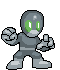
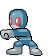
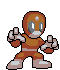
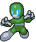

Ajuda
1. Estória
2. Comandos
3. Inimigos
4. Créditos
1. Estória
Forças ocultas interestelares do mau roubaram o cinto
de Walfredo, a peça chave para a construção do Grid de Dominação Global Portátil
Turbo Luxo Extra Grande. Só Walfredo, com sua incrível técnica head-fu, pode acabar
de uma vez com esta terrível ameaça e conseguir o seu cinto de volta!
2. Comandos
Os comandos de As Aventuras de Walfredo Cirne são:
Setas do teclado - Movem Walfredo pela tela.
Tecla X - Faz Walfredo atacar.
Tecla Z - Faz Walfredo pular.
Tecla ESC - Sai das telas de ajuda e de hiscores, e pula as telas de estória.
3. Inimigos
As tais forças ocultas são compostas de quatro classes diferentes,
que, apesar das semelhanças, não são parentes:
Graft

Esses carinhas são os componentes mais comuns (e fracos) do panelinha dos caras maus,
e não são lá muito inteligentes.
Indigo

Mais fortes, mais espertos e mais azuis, estes inimigos podem desviar de voadoras.
Blaze

Além de poder escapar de voadoras, os Blaze possuem uma particularidade imprevisível
e devastadora...
The Boss

Ele é rápido, resistente e pode acabar com você com dois golpes. Quer mais alguma
explicação?
4. Créditos
Programação
Paolo Victor
Hélder Fernando
Álvaro Magnum
Fabrício Gutemberg
Dalton Cézane
Design e gráficos
Paolo Victor
|